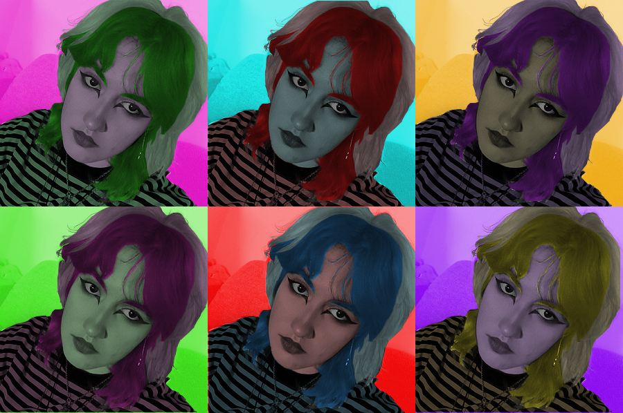
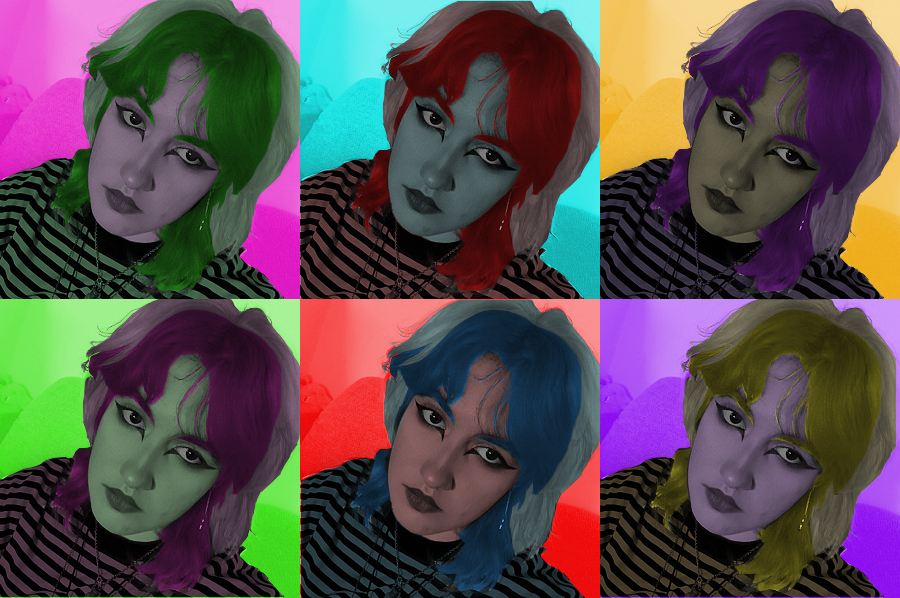

Vježbe i Projekti
Ovo su zadaci koji smo radili na vježbama kolegija "Digitalni multimedij."
Vježba 1
Izradili smo vlastiti font koji se sastojao od svih slova u našem punom imenu i sa dodatnim hrvatskim slovnim znakovima (ć,č,đ,š,ž).
Vježba 2
Nacrtali smo Bazijerovu krivulju te smo ju pretvorili u zanimljiv dizajn na zadanim slovima (inicijalima naših imena).
Vježba 3
Crtali smo oblike uz pomoć krivulja pa smo ih bojali i mijenjali tramsparaciju kako bismo dobili što zanimljiviji rad.
Vježba 4
Izradili smo različite elemente uz pomoć gradijena i transaparacije.
Prvi projektni zadatak
Ovdje smo iskoristili prethodno naučena znanja u Ilustratoru kako bismo napravili razna voća, možete vidjeti transparaciju na čašama i gradijent posvuda. Također smo ili iskoristili prethodni font ili napravili novi da napišemo voće, ja sam ipak odlučila napraviti novi pošto mi se prvi nije svidio.
Vježba 5
Sa 5. vježbom smo krenuli u photoshop, kao prvu vježbu smo dobili retuširati slike tj. ukloniti bilokakve mane na slici ili dodati ako je nešto falilo.

Vježba 6
U ovoj vježbi smo pomoću kanala i maska mijenjali boje konkretno označenim dijelovima slike.
 

Vježba 7
Ovdje smo više slika pokušali uklopiti u jednu dodavanjem sijena i mijenanjem svjetline.

Drugi projektni zadatak
U ovom zadatku smo morali ukopiti više slika u jednu ali smo morali i iskoristiti vještine i iz prethodnih zadataka pa smo neke slike morali retuširati i nekim elementima mijenjati boju.
Vježba 8
U videu smo morali irezivanjem dijela slike (koju smo uzeli iz videa) u photoshopu napraviti da video izgleda statično te da se jedan dio i dalje očito pomiće.


Vježba 9
U ovoj vježbi smo uređivali video tako da spajamo više videa i dodajemo im razne efekte.
Vježba 10 i 11
Ovdje smo morali napraviti vlastitu web stranicu.